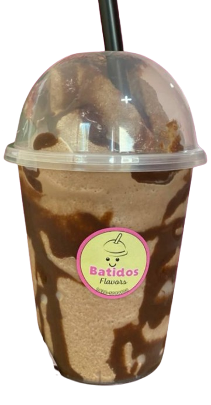
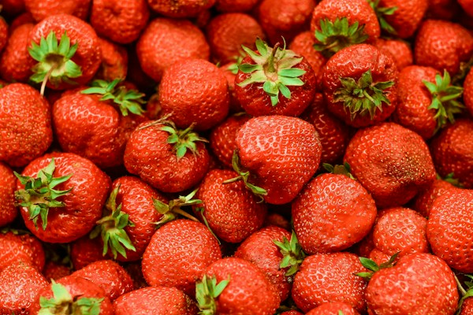
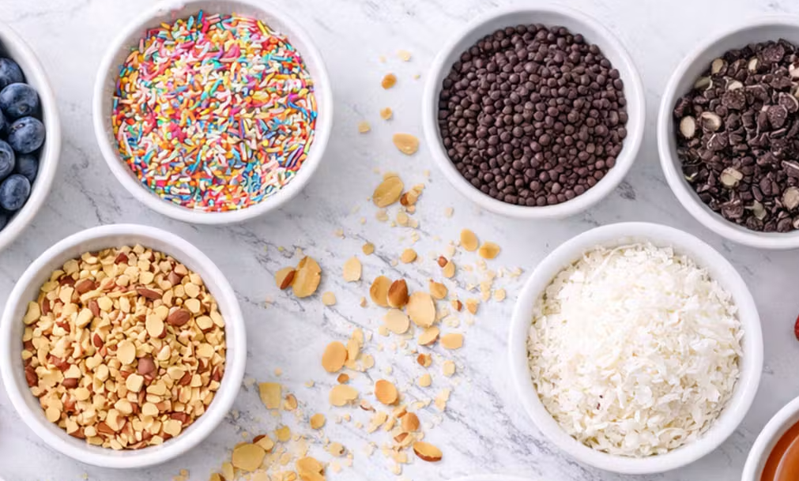

Especial de la casa
Batidos preparados al instante, junto a una selección de postres artesanales: fresas con crema, pie de parchita y recetas caseras listas para disfrutar en Quíbor, estado Lara. Cremosidad desde el primer sorbo.
Una probadita de nuestro menú. Mira todas las opciones y precios en la sección Menú.


No escatimamos en calidad. Estos son los pilares de cada creación Flavors.

Seleccionadas frescas para conservar el sabor y los nutrientes reales de cada fruta.

Base cremosa que aporta textura sedosa y un punto justo de dulzor natural.

Galleta, brownie, Cerelac y chocolate para coronar cada vaso con generosidad.
Preparamos tu pedido cuando lo ordenas. Frescura garantizada en cada sorbo.
"Perfecto el pie de Parchita, una mezcla de sabores que no tiene comparación."
"Cremosidad desde el principio a fin. ¡100% recomendados!"
"Las fresas con crema y brownie son una delicia. me volvi adicto."